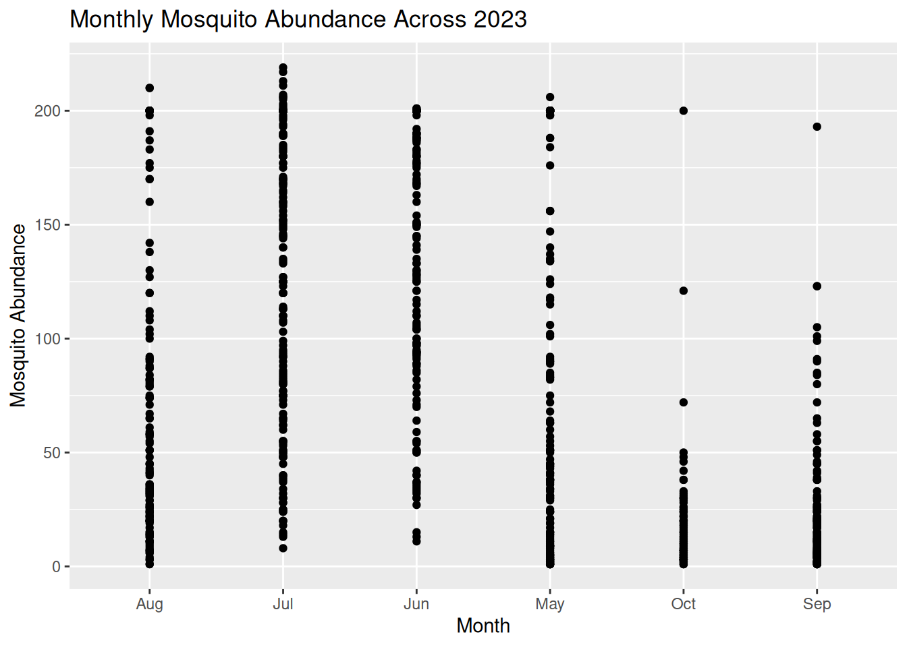

Welcome
Welcome to the One Health VBD Hub (vbdhub.org) 2026 training workshops!
On this site you will find the course materials and pre-work for these sessions.

These workshops have been developed to provide online training to the VBD community, and cover two topics:
Data visualisations in R covers visualisations commonly used in VBD research, such as abundance plots, and how we can develop these into effective visualisations. We also consider patterns and data details that can be extracted from visualisations, and how to ensure visualisations are accessible to different audiences.
Data wrangling with Hub Search and ohvbd involves navigating VBD Hub and the available resources to access VBD datasets. We will run practical examples with real VBD datasets, including accessing and wrangling complex datasets in preparation for further analyses.
The live workshops will run in March 2026, but these resources will be available for long term access.
The aim of these workshops is provide researchers with the skills to improve data communication and sharing with a variety of audiences, including academics, policymakers, and members of the public.
Intro stuff goes here
(PART) Workshop 1: Data Visualisations in R
1 Introduction
1.1 Learning objectives
By the end of this workshop, you should be able to:
- Generate accessible visualisations to communicate complex data to different audiences and stakeholders.
- Formulate data-driven hypotheses from effective data visualisations.
- Build collaborative, professional connections within the VBD community.
1.2 Prerequisites
Before participating in this workshop, you should have:
- Foundational knowledge of programming in R and RStudio, including running code, installing packages, and working within scripts.
- Some experience of formatting datasets in R, such as importing .csv files and viewing dataframes.
- Basic understanding of VBD biology, including common vectors and pathogen transmission.
1.3 Training Plan
1.3.1 Pre- live session content
This is to be completed ahead of the Live Session. Content will be available on the Hub under Learning Resources.
The VBD Hub Forum is available for support and networking.
1.3.2 Live session
10:00 - 13:00 on Thursday 19th March, via Teams.
Content will be made available on the Hub under Learning Resources on the day of the Live Session.
1.3.3 Challenge Task
Multi-stage task to be completed independently after the Live Session. The stages will increase in difficulty and provide an opportunity to apply what you have learnt to real VBD datasets.
Content will be posted on the VBD Hub under Learning Resources on the day of the Live Session. The VBD Hub Forum will be available for support.
1.5 Available Materials & Support
If you need a quick reminder of basic coding in R, additional materials and cheat sheets can be found here:
- Biological Computing in R
- Data Management (read up to Data visualization)
- Basic Hypothesis Testing
- RStudio IDE Cheatsheet
- Data Wrangling with dplyr Cheatsheet
If you need additional support through this workshop:
- The Forum is a good place to discuss queries with fellow participants.
- Demonstrators will be available to help during the Live Session.
- During the Challenge Task, a specific discussion on the Forum will be open to ask demonstrators questions. One-to-one video support will also be available if required.
- For technical support (e.g. trouble accessing content or joining the Teams link), please contact (email). This is not for coding or statistical support.
1.6 Installing Packages
This workshop will use several R packages throughout, please install these ahead of the Live Session.
Packages for this workshop:
ggplot2tidyverselubridate
2 Pre- Live Session Content
link to optional recap of linear models and basic plots
2.1 Commonly Used Visualisations for VBD Data
Different types of data need different types of visualisations.
Choosing the appropriate plot to best represent your data is important to communicate your data and the proposed patterns clearly and accurately.
In VBD research, common visualisations you might come across include:
- Scatter plots - useful to explore relationships between variables.
- Boxplots - useful to compare distributions between groups.
- Line plots - useful to visualise trends over time.
- Bar plots - useful to compare values between groups.
- Maps - useful to show spatial patterns.
In vector surveillance research, one of the most useful and frequently used visualisations is abundance plots. These can be used to show how vector counts change over time or across locations.
Abundance plots typically use lines to communicate overall trends in vector populations. However, points can also be used to show individual observations within the dataset. This can be particularly useful during exploratory analysis as it allows us to visualise variation in the data and identify outliers.
Throughout this training, we will focus on developing effective abundance plots with real VBD datasets. We will start with simple exploratory abundance plots in this Pre- Live Session content, and build more complex abundance plots during the Live Session.
2.2 What can Visualisations Tell Us About Data?
Effective visualisations can help us to communicate complex datasets by quickly identifying distributions and patterns in the data that can be unclear from dataframes alone.
Visualising data can help us to identify:
- Distribution of data - how values are spread across a dataset, including the spatial distribution of vectors or pathogens.
- Correlative relationships - potential associations between multiple variables, such as vector populations and environmental factors.
- Temporal trends - variable changes over time, for example, vector abundance over time.
- Inter-group comparisons - differences between groups, for instance, vector species across regions.
- Outliers or anomalies - unexpected observations that may suggest errors to be addressed before modelling.
Given how much information we can extract from them, visualisations are often the first step in exploratory data analysis before further statistical modelling.
2.2.1 Task 1: Visualising Tick Abundance Across Locations
Let’s try visualising some VBD data. First, download tick_dataset_wrangled.csv and open it in RStudio:
This dataset contains tick abundance, sample_value, across two sampling locations, sample_location.
Where most people make mistakes: Remember to save tick_dataset_wrangled.csv to an appropriate working directory and set your working directory correctly in RStudio!
We can plot this data to visualise the difference in abundance across the two sample locations. You might typically see bar plots used to visualise abundance across two groups, but here we will use a scatter plot to show individual observations, which allows us to assess variation and identify potential outliers in the dataset.
To do this, we will use the ggplot2 package. ggplot2 is one of the most commonly used packages for visualisations and graphics, so it is useful for you to understand how to code with this package. It is particularly good to build plots step-by-step by defining:
- The dataset we want to use.
- The variables we want to visualise.
- The type of plot we want to generate.
Run this code to generate a simple abundance plot of tick_data using points to show individual observations:
library("ggplot2")
tick_abundance_location <- ggplot(tick_data, aes(x = sample_location, y = sample_value)) +
geom_point() +
labs(
x = "Sampling Location",
y = "Tick Abundance",
title = "Tick Abundance Across Sampling Locations"
)
tick_abundance_locationYou should now see a simple abundance plot in the “Plot” window of RStudio, which looks like this:

Tip: Using ggplot2 to code visualisations can look heavy, but what we are doing is breaking down each step of the plot like building blocks. Let’s have a closer look:
ggplot(tick_data, aes(x = sample_location, y = sample_value))
tick_data is the dataset we want to visualise.
aes() represents aesthetics, including which variables from the dataset we want to visualise. For this plot:
x = sample_location tells R to place sampling location on the x-axis.
y = sample_value tells R to place tick abundance on the y-axis.
geom_point()
Tells R to plot a point for each observation in the dataset. For this data, one observation is the tick count per sample collected at a particular location. We would change this if we wanted to use a line plot.
labs(
x = "Sampling Location",
y = "Tick Abundance",
title = "Tick Abundance Across Sampling Locations"
)The labs() function simply adds labels to the visualisation to make it easier to interpret. For this plot, we have added an x-axis label, a y-axis label, and a title for the plot.
It is a good idea to save your visualisations so you can easily refer back to them when you need. There are several ways to save visualisations in R, but it is good practice to use code:
ggsave("tick_abundance_location.png", plot = tick_abundance_location)
Now that we have visualised the data, we identify patterns and extract information about the dataset.
From the visualisation, we can see:
- Tick abundance appears to be greater in Sogn and Fjordane than in Akershus and Østfold.
- Most observations across both locations show relatively low tick abundance, with a small number of samples showing much higher values.
- Sogn and Fjordane has more samples than Akershus and Østfold, suggesting a potential bias in sampling effort. This is something which may need to be addressed when running further analysis.
- Although some Sogn and Fjordane samples include very high tick counts, these values are spread across several observations, suggesting genuine variation in the data rather than single outliers.
2.2.2 Task 2: Visualising Mosquito Abundance Over Time
Let’s try another visualisation, this time plotting vector abundance over time. Visualising data across time can help us identify temporal trends, seasonal patterns, and periods of unusually high or low abundance.
Download the mosquito_monthly_2023_subset.csv dataset and open in RStudio:
Now, let’s visualise the data using another simple abundance plot using points to show individual observations:
mosquito_abundance_monthly <- ggplot(mosquito_monthly_data, aes(x = month, y = sample_value)) +
geom_point() +
labs(
x = "Month",
y = "Mosquito Abundance",
title = "Monthly Mosquito Abundance Across 2023"
)
mosquito_abundance_monthlyYou should now see a new simple abundance plot in the “Plot” window of RStudio, which looks like this:

Don’t forget to save your plot:
ggsave("mosquito_abundance_monthly.png", plot = mosquito_abundance_monthly)
Now it’s your turn to have a go at identifying patterns and information about the dataset from this new visualisation, as we did in Task 1. Please record your answers in the Response Form at the end of the Pre- Live Session content.
Tip: Consider these prompts if you need some additional guidance:
- Can you observe any potential temporal or seasonal trends?
- How is the data distributed? Are abundance counts spread or clustered?
- Can you make comparisons between the different months?
- Are there any potential anomalies in the dataset?
2.3 Formulating Hypotheses From Visualisations
Now that we know what patterns can be drawn from data visualisations, we can begin to develop hypotheses on the mechanisms and processes that might explain these patterns.
A hypothesis is a testable explanation for an observed pattern.
For example, if we visualised a dataset on Culicoides abundance over time and observed a pattern showing higher Culicoides counts during the summer months, we might suggest the following hypothesis: “Higher temperatures during summer provide optimal conditions for Culicoides larval development, leading to increased abundance during this season.”
Similarly, if we plotted a dataset on sandfly abundance across different habitat types and observed a pattern indicating higher sandfly counts in peri-domestic habitats, we might suggest this hypothesis: “Peri-domestic environments increase sandfly abundance by providing suitable breeding habitats, such as organic waste from cattle sheds.”
From these examples, we can understand how visualisations can help to generate data-driven research questions and hypotheses.
Important: Remember, data visualisations alone do not show causation. They can be used as a tool to highlight potential patterns that should be tested using further statistical analysis.
2.3.1 Task 3: Formulating Hypotheses from Data Visualisations
Have another look at the visualisations you generated in Tasks 1 and 2, and consider the patterns we observed in the data.
What biological, environmental, or other factors might explain these patterns?
Write one possible hypothesis for each visualisation that could be tested using further analysis (you do not need to run further analysis for this workshop).
Please record your answers in the Response Form at the end of the Pre- Live Session content.
2.4 Response Form
Please complete this Response Form after finishing the tasks above.
This form is anonymous and is not an assessment. Your responses will help us to understand which areas may require more support during the Live Session. We aim to tailor the content to the group’s needs, so you gain the most from this workshop.
2.5 Conclusion & Preparation for Live Session
Ahead of the live session, ensure you keep R and RStudio installed on your device, as well as the packages we prepared earlier.
Please make sure you have Teams set up on your device and that your microphone is working. We will aim to send the link 48 hours before the live session. Please be aware that the live session will be recorded.
3 Live Session
Caution: This content is not yet complete. Come back soon.
3.1 Live Session Schedule
10:00 - Introduction 10:10 - Recap pre- Live Session 10:20 - Build on Abundance Plots 10:40 - Drawing Hypotheses from Complex Plots 10:50 - BREAK 11:00 - What Makes a Good Visualisation? 11:15 - Collaborative task 12:00 - BREAK 12:10 - Share Collaborative Task Results 12:25 - Communicating to Different Audiences 12:40 - Visualisation Themes & Accessible Graphics 12:50 - Prepare for Challenge Task & Conclusion
3.2 Introduction (10 mins)
Introduce myself
Introduce demonstrators
Recap Learning Objectives
Reiterate where to find support: Forum Demonstrators Technical difficulties - (email)
3.3 Recap Pre- Live Session Content (10 mins)
What went well?
Common mistakes?
Strong anonymous examples
3.4 Building on Abundance Plots (30 mins)
Abundance over time
Abundance with multiple species
Abundance with multiple species over time
(maybe) mention temperature
3.5 Drawing Hypotheses from Complex Visualisations (10 minutes)
Time-specific example
Species-specific example
3.6 What Makes a Good Visualisation? (15 mins)
Whiteboard discussion
Pros
Cons
3.7 Collaborative Task (45 mins)
Breakout rooms - participants are given a messy or incorrect graph and need to work together to fix it.
Ideally I would like each breakout room to have a different “problem” graph to fix, but this will depend on timings when developing content.
3.9 Communicating to Different Audiences (15 mins)
Academics, policy makers, public engagement
What the audience needs and what to emphasise.
3.10 Visualisation Themes & Accessible Graphics (15 mins)
ggplot themes
Colour blind friendly, alt-text, font size, contrast, shapes as well as colour, clear legends
3.11 Prepare for Challenge Task & Conclusion
Outline task
Where to find support
Conclusion
3.12 Reading & Resources
4 Challenge Task
(TBC)
4.1 Level 1
Identify data types from the provided dataset.
Plot an abundance plot for two species.
4.2 Level 2
Plot a trait over time (for a second but related dataset)
4.3 Level 3
Draw some hypotheses from your visualisations.
4.4 Level 4
Identify visual or accessibility limitations across your plots.
Make the themes consistent across all your plots.
Apply accessible elements.
4.5 Level 5
Present your graphs as if you were presenting to: i) Academics ii) Policy makers iii) Public engagement
(PART) Workshop 2: Data Wrangling with Hub Search & ohvbd
Caution: This content is not yet complete. Come back soon.
5 Introduction
5.1 Learning objectives
By the end of this workshop, you should be able to:
- Use VBD Hub resources to access shared VBD datasets.
- Effectively wrangle real-world VDB datasets ready for further analysis.
- Build collaborative, professional connections within the VBD community.
5.2 Prerequisites
Before participating in this workshop, you should have:
- Foundational knowledge of programming in R and RStudio, including running code, installing packages, and working within scripts.
- Some experience of formatting datasets in R, such as importing .csv files and viewing dataframes.
- Basic understanding of VBD biology, including common vectors and pathogen transmission.
5.3 Training Plan
5.3.1 Pre- live session content
This is to be completed ahead of the Live Session. Content will be available on the Hub under Learning Resources. The VBD Hub Forum is available for support and networking.
5.3.2 Live session
10:00 - 13:00 on Thursday 26th March, via Teams. Content will be made available on the Hub under Learning Resources on the day of the Live Session.
5.3.3 Post- Live Session Challenge Task
Multi-stage task to be completed independently after the Live Session. The stages will increase in difficulty and provide an opportunity to apply what you have learnt to real VBD datasets. Content will be posted on the Hub under Learning Resources on the day of the Live Session. The VBD Hub Forum will be available for support and networking).
5.5 Available Materials & Support
If you need a quick reminder of basic coding in R, additional materials and cheat sheets can be found here:
- Basic R syntax & functions
- Data wrangling (read up to Data visualization)
- Basic hypothesis testing
- Basic R cheatsheet
- Data wrangling with dplyr and tidyr cheatsheet
If you need additional support through this workshop:
- The Forum is a good place to discuss queries with fellow participants.
- Demonstrators will be available to help during the Live Session.
- During the Challenge Task, a specific discussion on the Forum will be open to ask demonstrators questions. One-to-one video support will also be available if required.
- For technical support (e.g. trouble accessing content or joining the Teams link), please contact (email). This is not for coding or statistical support.
5.6 Installing Packages
This workshop will use several R packages throughout, please install these ahead of the Live Session.
Packages for this workshop: (to be added when coding tasks)
Reminder: To install packages in R, use the install.packages() command.
To install one package:
To install multiple packages:
6 Pre- Live Session Content
6.1 VBD Hub Overview
What is VBD Hub?
Goals
Impact
6.3 Resources Available Through VBD Hub & How to Use Them to Access Data
6.3.1 Hub Search
Hub Search - what is this and how to use it
Task - access a specific dataset with Hub search
6.3.2 ohvbd package
ohvbd package - what is this and how to use it
ohvbd - install and functions
To install the ohvbd package, run the following command:
An example of loading data:
library(ohvbd)
find_vd_ids()
#> <ohvbd.ids>
#> Database: vd
#> [1] 216 217 218 219 220 221 222 223 349
#> [10] 350 351 352 353 354 355 356 361 362
#> [19] 363 364 365 366 367 368 369 370 371
#> [28] 372 373 374 390 391 393 394 395 396
#> [37] 397 398 399 400 401 402 403 404 405
#> [46] 406 407 408 409 410 411 412 413 414
#> [55] 415 416 417 418 419 420 421 422 423
#> [64] 424 425 426 427 428 429 430 431 432
#> [73] 433 434 435 436 437 438 439 440 441
#> [82] 442 443 444 445 446 447 449 450 451
#> [91] 452 453 454 471 472 473 474 475 499
#> [100] 500 504 520 521 522 523 524 525 526
#> [109] 527 528 529 530 531 532 533 534 535
#> [118] 536 537 538 539 540 541 542 543 544
#> [127] 545 546 547 552 556 557 559 560 585
#> [136] 586 589 590 591 595 596 600 601 602
#> [145] 604 605 606 607 608 609 610 611 612
#> [154] 613 614 615 616 617 619 620 621 622
#> [163] 623 624 625 626 627 628 629 630 631
#> [172] 632 633 634 635 636 637 638 639 640
#> [181] 641 642 643 644 645 646 647 648 649
#> [190] 650 651 652 653 654 655 656 657 658
#> [199] 659 660 661 662 663 664 665 666 667
#> [208] 668 669 670 671 672 673 674 675 676
#> [217] 677 678 679 680 681 682 686 687 689
#> [226] 690 691 692 693 694 695 696 697 698
#> [235] 699 700 701 702 703 704 705 706 707
#> [244] 708 709 710 711 712 713 714 715 717
#> [253] 718 719 720 721 722 723 724 725 726
#> [262] 727 728 729 731 732 733 734 735 736
#> [271] 737 738 739 740 741 742 743 744 745
#> [280] 746 747 748 749 750 751 752 753 754
#> [289] 755 756 757 758 759 760 761 762 763
#> [298] 764 765 766 767 768 769 770 771 772
#> [307] 773 774 775 776 777 778 779 780 781
#> [316] 782 783 784 785 786 787 788 789 790
#> [325] 791 792 793 794 795 796 797 798 799
#> [334] 800 801 802 803 804 805 806 807 808
#> [343] 809 810 811 812 813 814 815 816 817
#> [352] 818 819 820 821 822 823 824 825 826
#> [361] 827 828 829 830 831 832 833 834 835
#> [370] 836 837 838 839 840 841 842 843 844
#> [379] 845 846 847 848 850 851 852 853 854
#> [388] 855 856 857 858 859 860 861 862 864
#> [397] 866 867 868 869 870 871 872 873 874
#> [406] 875 876 877 878 880 881 882 883 884
#> [415] 885 886 887 888 889 890 891 892 893
#> [424] 894 895 896 898 900 901 902 903 904
#> [433] 905 906 907 908 909 943 944 945 946
#> [442] 947 948 949 950 952 955 961 27003 27006
#> [451] 27009 27010 27011 27012 27014 27015 27016 27017 27020
#> [460] 27021 27022 27023 27024 27025 27032 27033 27035 27037
#> [469] 27038 27039 27040 27041 27042 27043Task - access a specific dataset with ohvbd (Francis’ vignettes)
6.3.3 Forum
Forum - what is this and how to use it
Task - introduce yourself on the Forum
6.4 Data Wrangling Principles
Wide to long, check data type
Example task
6.5 Form (ahead of the live session)
Did you access the datasets?
What types of data?
Data wrangling Q
7 Live Session
7.1 Schedule
10:00 - Introduction 10:10 - Recap Pre- Live Session Content 10:20 - Data Wrangling (Broad) 10:25 - Replicate/Merging 10:40 - Fix Species Name 11:00 - BREAK 11:10 - Real-World Data is Messy 11:25 - Collaborative Task 12:10 - BREAK 12:20 - Share Results from Collaborative Task 12:35 - Collaboration (Forum) 12:50 - Prepare for Challenge Task & Conclusion
7.2 Introduction (10 mins)
Introduce myself
Introduce demonstrators
Recap Learning Objectives
Reiterate where to find support: Forum Demonstrators Technical difficulties - (email)
7.3 Recap Pre- Live Session Content (10 mins)
What went well?
Common mistakes
Strong anonymous examples?
7.4 Data Wrangling (Broad) (5 mins)
Lots of ways to wrangle data, depends on field, data collected, etc.
We will focus on two methods key to VBD data.
7.5 Replicate/Merging (15 mins)
Similar columns across two datasets
Merge by common column
Useful functions
Common mistakes
7.6 Fix Species Name (20 mins)
Find and remove a misnamed species
Remove underscore or spp. Etc. at the end of the species name
Make a column all lowercase
Useful functions
Common mistakes
Combine merging - merge by species
RGBIF for those wanting extra
7.7 Real World Data is Messy (15 mins)
Common trip-ups in “messy” data sets
What to look out for
7.8 Collaborative Task (45 mins)
Find a specified dataset through ohvbd
Identify what makes it messy
Wrangle data
Try to use datasets with multiple messy elements: Mixed data types Messy columns (merge) Messy species names Wide to long
7.10 What Does Collaboration Mean to You? (15 minutes)
Why do you want to collaborate?
What makes a good collaboration?
What makes a bad collaboration?
How could you use the Forum in your own research context for collaboration?
Whiteboard
7.11 Prepare for Challenge Task & Conclusion (10 mins)
Outline Challenge Task
Where to find support
Conclusion
8 Challenge Task
8.1 Level 1
Find a dataset using Hub Search or VBD Hub (participant choice)
8.2 Level 2
What data types?
Does it need converting from wide to long?
8.3 Level 3
Do any columns need merging? (second dataset? TBC?)
8.4 Level 4
Check species names
Variable/trait names?
8.5 Level 5
Share your wrangling process in the Forum, feedback to each other
You might choose to pair up with someone using similar data and give peer feedback
Tip: This is a tip.
Note: This is a note.
Important: This is important.
Caution: This is a caution.
Warning: This is a warning.
(APPENDIX) Optional Recap of LMs and Basic Plots
9 Recap of Linear Models & Basic Plots (optional)
Before we dive into the wonderful world of plots and visualisations, let’s turn our attention to the models we will be using to plot outputs. Here, we will recap simple linear models - linear regression models and ANOVAs. There are several ways to approach these, but using a consistent approach throughout this workshop will contribute to shared understanding to make the most of the tasks and collaborative opportunities to follow.
Following this, we will cover some basic plots that are commonly used during exploratory data analysis. These can help us make decisions about which statistical models and visualisations are appropriate for our data.
9.1 Linear Models
9.1.1 Linear Regression Models
Linear regression models are a commonly used type of linear model, which are particularly useful when both the response and predictor variables are continuous. We use linear regression models to quantify the relationship between these two variables so that we can identify trends and make predictions from the data.
Linear regression models fit a straight line relationship between the response variable and continuous explanatory variable, which can be shown as the equation: (insert equation for linear regression model)
\[ y = mx + c \]
To code a linear regression model, we can use the following syntax:
Tip: When naming models or other objects in R, try to use specific names so you know what your object is explicitly. Using short names like model1, model2, etc. can get confusing.
Frequent Mistake:
- R cannot handle spaces in object names. There are a few options for alternative syntax, we would recommend using camelCase where letters are capitalised to indicate new words (e.g.
specificModelName), or using an underscore to connect words (e.g.specific_model_name). - If using camelCase, remember that R is case sensitive - if your object is named
specificModelName, but you callspecificmodelname, R will show an error:
#> Error: object ‘specificmodelname’ not found.To view the output of a linear regression model, we can use the summary() function:
This will show a lot of information (which is useful to familiarise yourself with), but for this workshop, we are primarily interested in the Coefficients table.
This table will have one row for each coefficient in the model - two rows for a simple linear regression model: the Intercept and the Slope.
- The Intercept estimate represents the predicted value of the response variable when the explanatory variable is zero.
- The Slope estimate is proportional to the correlation coefficient between the response variable and explanatory variable, scaled by the ratio of standard deviations. Put simply, this estimate represents the strength (value) and direction (positive or negative) of the relationship between the response and explanatory variables.
The Coefficient table also shows the details for a t-test, which tells us whether or not the slope and intercept are significantly different from zero.
Std. Error- how far observations sit from the regression line.t value- the estimate divided by the standard error.Pr(>|t|)- the p-value, used to inform the probability of observing this result if the true coefficient was zero.
Tip: When we plot a line of best fit, this reflects the mean, variance, and correlations in your dataset. Knowledge on these model coefficients will help you better understand the plots and visualisations we do later in this workshop.
9.1.2 ANOVA Models
What happens if your explanatory variable is categorical, rather than continuous? This is where ANOVA models come in, or the ANalysis Of VAriance across the means of different groups or categories. An ANOVA is a useful type of linear model, particularly when the response variable is continuous, and the explanatory variable is categorical.
Coding an ANOVA is essentially the same as a linear regression model - we still use the lm() function to fit the relationship between a response and explanatory variable. However, now that the explanatory variable is categorical, the slope represents the difference between group (category) means.
As before, we can use the summary() function to check the model output and view the Coefficients table (which will be laid out in the same way as a linear regression model output).
Despite looking the same, there are some differences for an ANOVA output:
- The Intercept is the mean of the first category.
- The Slope is the difference between the mean of the first category and this (named) category.
While the summary() function can be used to assess the differences between specific categories, the anova() function can tell us whether or not the categorical explanatory variable as a whole has a significant effect on the response variable.
The output of the anova() function also provides a table, which lists the following statistics:
Df- refers to the number of categories and observations.Sum Sq&Mean Sq- measures of variance between or within categories.F-value- the ratio of explained variance to unexplained variance (a higher F-value indicates the categorical variable has a significant effect).Pr(>F)- the p-value, used to inform the probability of observing this F-value if there was no true difference between the categories.
Tip:
- Use
summary()if you are interested in the category means and differences of the explanatory variable. - Use
anova()if you are interested in the overall significance of the explanatory variable on the response variable.
If you are interested in further linear models, you can find resources here:
- Linear Models: Multiple explanatory variables
- Linear Models: Multiple variables with interactions
- Generalised Linear Models
This additional content is optional, and is not necessary to complete this workshop.
9.2 Basic Plots
9.2.1 Scatter Plots
A scatter plot can be used when you want to visualise the relationship between two continuous variables.
Plotting raw data with a scatter plot allows you to identify trends in the data, including direction and strength of the relationship between the variables. You can also spot outlier observations that deviate from the general pattern, and the shape of the data can help decide whether a linear or non-linear model is appropriate for your dataset.
To plot a simple scatter plot, we can use the plot() function:
plot(myDataframe$variable1, myDataframe$variable2)
Frequent Mistake: If you just press plot() without describing specific variables in your dataset, you will end up with a messy and overwhelming visualisation. Use $ and specify the specific variables you want to compare.
9.2.2 Histograms
Histograms are used to visualise the distribution on a single continuous variable. This is done by splitting the range of values into intervals, called bins, and calculating the frequency of data points that sit in each interval.
Histograms can be particularly useful to check whether your data is normally distributed or skewed, to view the variance (or spread) of your data, and to identify gaps in the data which may suggest issues with data collection.
Histograms do not show us the relationship between variables. However, we can plot two histograms for two variables we want to compare so that we can assess the distributions of the two variables.
To plot a simple histogram, we can use the hist() function:
hist(myDateframe$variable1)
9.2.3 Boxplots
Boxplots are used to compare the distribution of a continuous variable across different groups or categories. They are particularly useful when your response variable is continuous, and your explanatory variable is categorical.
A boxplot summarises the distribution of data using five key statistics:
- The minimum value
- The lower quartile (Q1)
- The median
- The upper quartile (Q3)
- The maximum value
The box represents the interquartile range (IQR), which contains the middle 50% of the data. Values that fall outside this range may appear as outliers.
Boxplots summarise the distribution and variation of the data, but do not show individual observations. Therefore, some detailed variation within the dataset may not be visible.
To plot a simple boxplot, we can use the boxplot() function:
boxplot(myDataframe$continuousVariable ~ myDataframe$categoricalVariable)